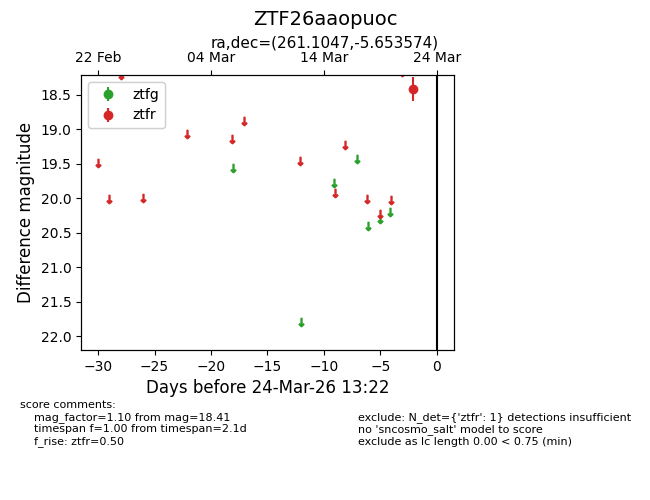
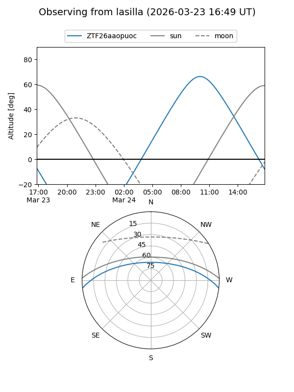
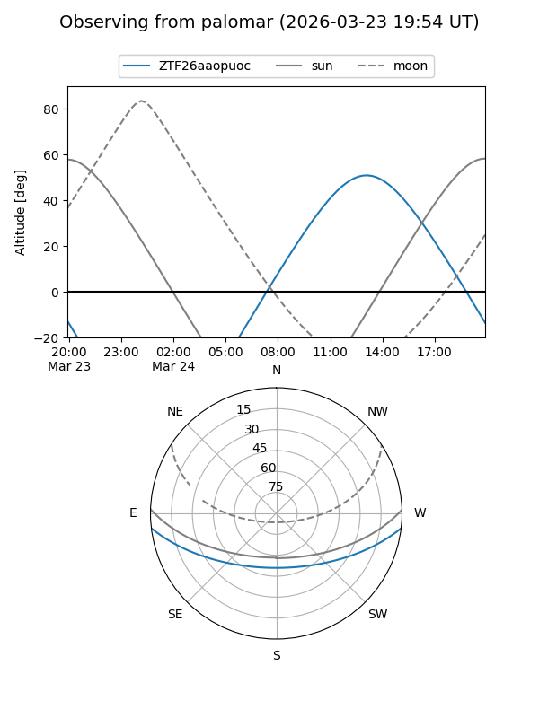

ZTF26aaopuoc
Target ZTF26aaopuoc at 2026-03-24 13:25
Aliases and brokers:
FINK: link
Lasair: link
ALeRCE: link
alt names
ZTF26aaopuoc (ztf,fink_ztf)
Coordinates:
equatorial (ra, dec) = 261.1047,-5.65357
equatorial (HMS+DMS) = 17:24:25.14,-05:39:12.87
galactic (l, b) = (17.4586,+16.45935)
Flags:
Photometry:
last ztfr=18.41
1 ztfr detections
Lightcurve

Visibility


Additional plots